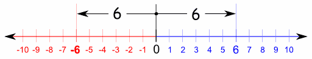

Mutlak Değer
Bir sayının, sayı sayı doğrusunda belirttiği noktanın uzaklığına, bu sayının mutlak değeri denir.

a ≥ 0 ise, |a| = a
a < 0 ise, |a| = -a dır.
* |a| ≥ 0
Mutlak Değerin Özellikleri
- Mutlak değer her zaman 0 a eşit veya 0 dan büyüktür. Negatif olmaz. |a| ≥ 0 dır.
- Mutlak değerin içi eğer negatifse sayıyı mutlak değerin dışına çıkartırken sayının pozitif olması için (-) işaretiyle çarpılır. |-5| = - (-5) = 5 dir.
- Ayrı ayrı mutlak değerler içinde çarpılan sayıları tek mutlak değer içinde çarpabiliriz. |a|.|b| = |a.b|
- Mutlak değer içerisinde yapılan toplama ve çıkarma işlemlerini mutlak değer dışına çıkartıp ayrı ayrı toplayıp yada çıkartamayız. |a| + |b| ≠ |a + b| , |a - b| ≠ |a| - |b|
- Mutlak değer içerisinde yapılan bir toplama işlemi, bu sayıların ayrı ayrı mutlaklarının toplamından büyük olamaz. |a + b| ≤ |a| + |b| dir.
- Mutlak değerin içinden yada dışından kuvvet alınması değeri değiştirmez. |an| = |a|n dir.
Örnek:
x < 0 < y ise
|x - y| + |x| - |y|
ifadesinin eşitini bulalım.
Çözüm:
Mutlak değer sorularında dikkat etmemiz gereken en önemli şey mutlak değerin içini pozitif mi yoksa negatif mi olduğudur. Eğer mutlak değerin içi pozitifse direk dışarı çakarken negatif olması durumunda (-) işaretiyle çarpıp çıkartırız.
x - y < 0, x < 0 y > 0 olduğuna göre
|x - y| + |x| - |y| = -(x - y) + (- x) - y
= -x + y - x - y
= -2x olur.